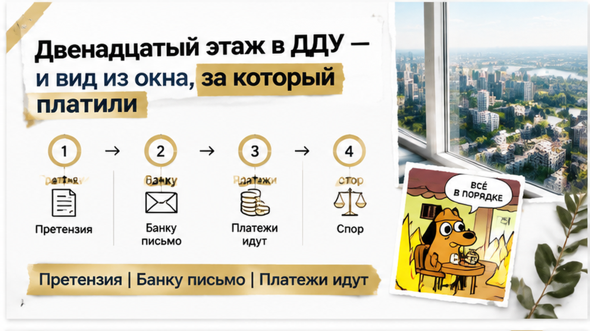
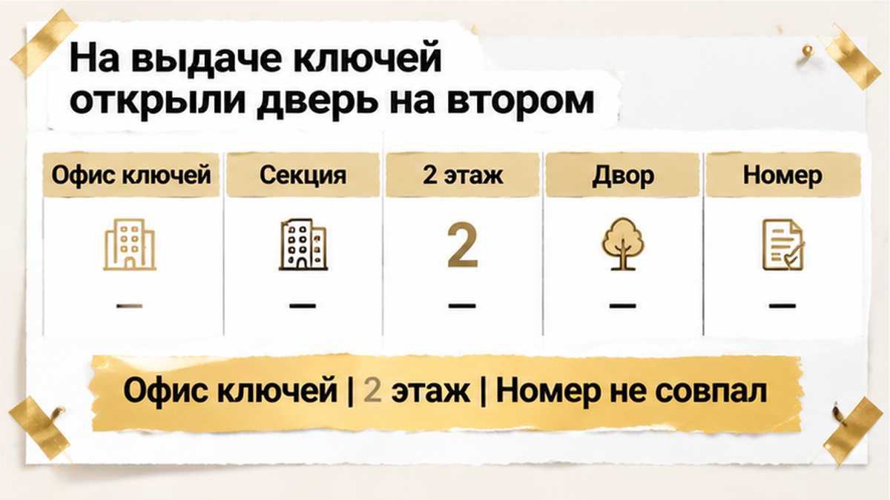
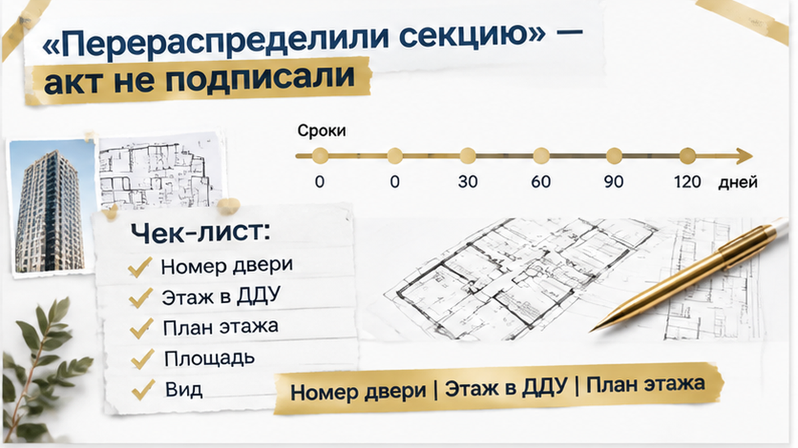
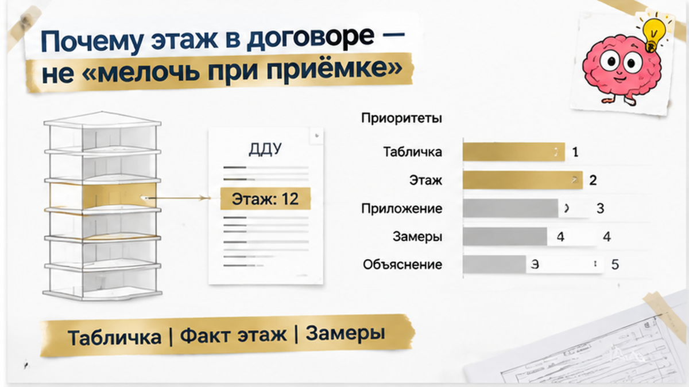
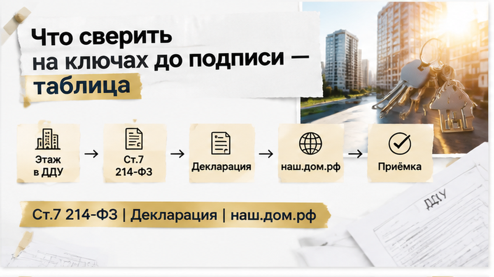

В день выдачи ключей семья из Тюмени приехала за своей квартирой в новостройке, а открыла дверь на другом этаже. В ДДУ, приложении с поэтажным планом и всей истории покупки стоял 12-й этаж. На месте оказался второй: ниже окна, другой вид, больше шума и совсем другое чувство приватности. Представитель застройщика объяснил это «перераспределением в секции» и технической корректировкой проекта. Готового согласия семьи на замену квартиры при этом не было.
Я Святослав Шакин, The Риэлтор в Тюмени. В Telegram разбираю такие ситуации с новостройками, а в MAX можно задать вопрос и следить за разбором.

Для этой семьи 12-й этаж был не случайной цифрой в объявлении. Квартиру выбирали ради тишины, вида и большей приватности: окна выше уровня двора, меньше шума от машин и людей, другое ощущение пространства. Это обсуждали с менеджером, а затем закрепили в документах — в ДДУ был указан этаж, приложен поэтажный план и обозначено расположение квартиры.
Здесь важно не смешивать рекламное обещание с условием договора. Фраза менеджера о красивом виде может быть оценкой. Но этаж, площадь, план и положение квартиры на этаже описывают конкретный объект долевого строительства. В части 4 статьи 4 закона № 214-ФЗ среди характеристик объекта прямо назван этаж.
Поэтому переход с одного этажа на другой — не мелкая царапина на двери и не недоделанный участок отделки. Меняется сама характеристика квартиры: из окна виден другой уровень города, меняются шум, приватность и восприятие безопасности. Может измениться и привлекательность объекта на рынке, хотя универсальной формулы, на сколько процентов из-за этого должна снизиться цена, нет.
Застройщик вправе вносить изменения в проектную документацию. Но обновлённая проектная декларация сама по себе не означает, что покупатель согласился получить другой лот. «Техническая корректировка» объясняет, как застройщик называет причину, но не заменяет подписанное сторонами изменение ДДУ.
Если характеристики объекта действительно меняются, это должно быть оформлено надлежащим образом, а не обнаружено уже у двери в день передачи. До осмотра стоит сопоставить приложение к своему ДДУ с актуальными материалами проекта. Проектная декларация публикуется на наш.дом.рф, но она не отменяет условий конкретного договора. Главный вопрос простой: соответствует ли квартира, которую предлагают принять, объекту, описанному в подписанном ДДУ.

В офисе выдачи ключей всё сначала шло по обычной схеме. Уведомление о готовности пришло, дом сдали, ипотечная цепочка подходила к финальному этапу. Затем представитель провёл семью в другую секцию, поднял на второй этаж и открыл дверь с номером квартиры. За окном оказался двор и улица на совсем иной высоте. Номер этажа не совпал с тем, что покупатели видели в ДДУ и на поэтажном плане.
На вопрос, почему так произошло, прозвучали слова о перераспределении секции и технической корректировке проекта. Покупателям также дали понять: если не подписать акт, ипотека может затянуться. Но давление сроками не превращает второй этаж в предусмотренный договором и не заменяет согласие на изменение объекта.
Семья не стала подписывать передаточный акт на месте. Они сняли на видео путь к квартире, табличку на двери и вид из окна, попросили письменно указать причину расхождения и потребовали оформить акт о несоответствии. После осмотра направили застройщику претензию. Сейчас спор находится на досудебной стадии: требование передать квартиру в соответствии с ДДУ — один из возможных маршрутов, но заранее обещать результат или конкретную компенсацию нельзя.
В похожих историях меняется не только этаж. На ключах уже обнаруживали отсутствие помещения, которое было оплачено по ДДУ, — вот разбор такого расхождения. Бывает и другая подмена: в договоре указана квартира, а к финалу возникает вопрос со статусом апартаментов — об этом отдельная история.
Смысл один: осмотр перед актом — не формальность и не момент, когда нужно поскорее получить ключи. Если фактическая дверь, этаж или план не совпадают с приложением к договору, расхождение лучше зафиксировать сразу, пока его можно показать на месте и связать с конкретным пунктом ДДУ.

«Перераспределение в секции», «техническая корректировка проекта» — так представитель застройщика объяснил замену. Звучит как внутренний рабочий вопрос: что-то поправили в документах, покупателю осталось расписаться. Но семья не давала согласия на другой этаж. И спокойный тон сотрудника этого согласия не заменял.
Покупатели попросили показать документы, на основании которых изменили квартиру, и оформить расхождение письменно. На видео сняли путь к двери, табличку и вид из окна. Не просто «вот квартира, которая нам не нравится», а привязку к конкретному месту: куда привели, что открыли и чем это отличается от приложения к договору.
Передаточный акт семья не подписала. Потребовала акт о несоответствии, после осмотра направила застройщику претензию. На этом известный результат истории заканчивается: спор находится на досудебной стадии. Квартиру по договору пока не передали, компенсацию не выплатили, решения суда нет — обещать победу здесь было бы нечестно.
Вы бы подписали акт ради мебели и ипотеки или отказались бы от квартиры и пошли в суд, если в ДДУ указан 12-й этаж, а на ключах дают 2-й?

Царапину на двери можно убрать, криво поставленный наличник — заменить. С этажом так не получится: бригада не поднимет принятую квартиру выше. Поэтому разговор «запишите замечание, потом исправим» здесь требует совсем другого ответа. Сначала надо разобраться, какой объект предлагают принять, а уже потом обсуждать подпись.
Для покупателя поэтажный план часто выглядит картинкой с комнатами. Для проверки сделки это часть ответа на вопрос, что именно куплено: где расположена квартира, какой у неё этаж, площадь и положение относительно других помещений. В части 4 статьи 4 закона № 214-ФЗ этаж прямо включён в описание объекта. Простыми словами: это не пожелание покупателя, которое застройщик может учесть по возможности.
Есть и статья 7 того же закона: передаваемое жильё должно соответствовать ДДУ. Но из этого не следует, что любое расхождение автоматически даёт расторжение или заранее известную выплату. Передача квартиры по договору, обсуждение уменьшения цены, оценка оснований для расторжения — разные варианты. Выбирать между ними нужно по документам и доказательствам, а не по обещанию «точно всё отсудим».
Ссылка на обновлённый проект тоже не закрывает вопрос. Проектную декларацию можно посмотреть на наш.дом.рф, однако новая редакция сама по себе не означает, что покупатель согласился изменить свой ДДУ. Объяснить, почему застройщик что-то переделал, и подтвердить согласованную замену квартиры — не одно и то же. Здесь нужны документы, а не убедительное «теперь у нас так».
При этом отказ от подписи — не кнопка остановки всех процедур. Закон предусматривает возможность односторонней передачи при определённых условиях, поэтому просто уйти и ждать звонка недостаточно. Значение имеют дата осмотра, конкретное расхождение и письменная претензия с подтверждением её направления. Если представитель не оформляет замечания, этот отказ тоже стоит отразить: покупатель пришёл принимать жильё, но предъявленный объект не совпал с договором.
«Подписывайте, иначе ипотека затянется» — фраза, после которой хочется взять ручку и закончить этот день. Кредит уже есть, квартиру ждали, а теперь вместо переезда приходится разбираться с документами. Но подпись под актом не исправляет расхождение с ДДУ. И устное обещание сотрудника не объясняет, что именно затянется у банка и почему.
Здесь важно не свалить всё в одну кучу. Застройщику — письменная претензия по квартире, банку — письменное уведомление о ситуации и вопросы о сроках предоставления документов по кредитному договору. Самовольно прекращать ипотечные платежи нельзя: спор о том, что вам передают, сам по себе не меняет график платежей. Иначе к нерешённому вопросу с квартирой можно добавить просрочку перед банком.
На финише покупки вообще легко перепутать разные проблемы. Когда ключи переносят, а деньги остаются на эскроу, причина остановки одна; когда семейную ипотеку одобрили, но эскроу не открыли, другая. Здесь вопрос в соответствии квартиры договору. Поэтому обещать семье готовый исход спора или сумму компенсации сейчас было бы нечестно: претензия направлена, но спор ещё не закончен.
На осмотр лучше прийти с ДДУ и всеми приложениями, а не полагаться на экран телефона с одной страницей договора. Ниже — короткая схема, которая помогает не потерять главное в разговоре с представителем застройщика.
| Что проверить | С чем сравнить | Что зафиксировать при расхождении |
|---|---|---|
| Номер квартиры и табличку на двери | Номер объекта в ДДУ и уведомлении | Фото двери, коридора и таблички; письменное замечание |
| Этаж | Прямое указание этажа в ДДУ и поэтажный план | Фактический этаж, объяснение представителя, видео пути к квартире |
| Положение квартиры на этаже | Графическое приложение к ДДУ | Отличия расположения, соседние помещения и направление выхода |
| Площадь и план комнат | Договор и проектную документацию | Замеры и конкретные пункты несоответствия |
| Вид из окон и уровень шума | Не рекламную картинку, а фактическое положение квартиры | Видео из окон; это дополнительное подтверждение последствий, а не замена договору |
| Причину изменения | Письменные документы, а не устное «так получилось» | Запросить объяснение; сохранить переписку и ответ |
Для осмотра не нужна большая памятка на каждый возможный дефект. Нужен свой ДДУ со всеми приложениями, где видны номер квартиры, этаж, расположение и план. Сначала сравнивают их с тем, что открыли перед покупателем, и только потом переходят к отделке. Ровные стены не отвечают на главный вопрос: ту ли квартиру сейчас предлагают принять.
Если обнаружилось расхождение, полезнее записать два конкретных факта — что предусмотрено договором и что предъявлено, — чем спорить о том, насколько квартира «в целом хорошая». Фото и видео помогают показать место и последствия, письменное обращение — сохранить содержание требования. Вид из окна здесь дополнительное подтверждение, а не замена документам. И объяснение «проект скорректировали» тоже нужно проверять по бумагам, а не принимать вместо ответа.

В Telegram и MAX разбираю новостройки изнутри: где обычный разговор с менеджером заканчивается и начинается ваше обязательство по документам. Подписывайтесь, если хотите замечать такие места до подписи, а не после.
Семья пока не получила решения спора, зато не согласилась закрыть главное расхождение ради скорых ключей. Это не победный финал и не повод объявлять покупку потерянной. Между давлением в комнате выдачи и подписью осталось место для собственного решения — с договором перед глазами, а не с обещанием «потом разберёмся».